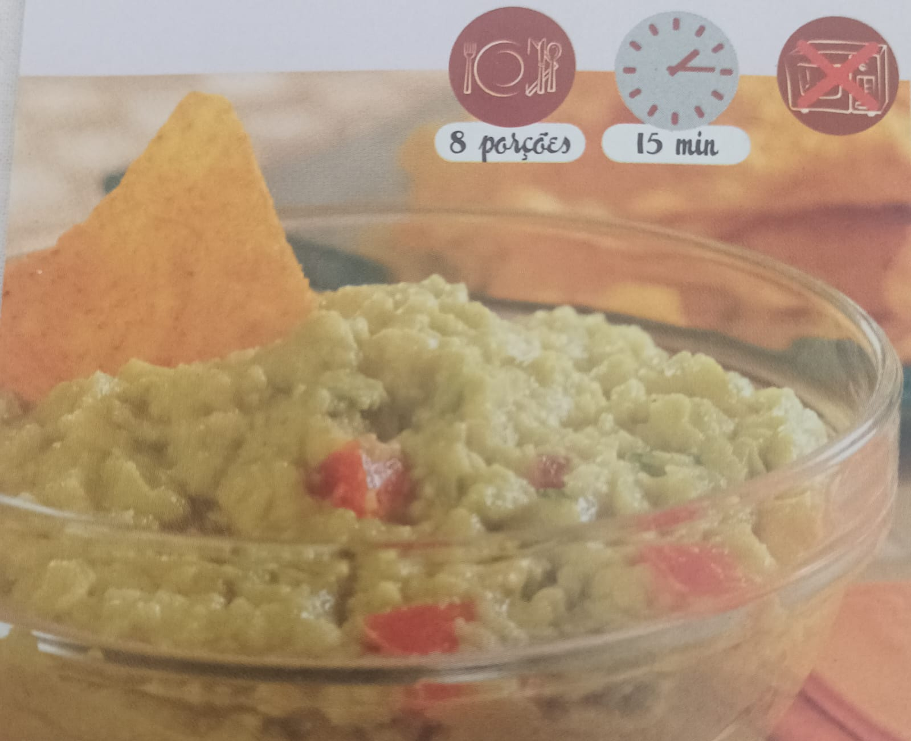

Receita auxiliar para recomposição física!
A tradução literal de "guacamole" é molho de abacate, vinda da junção das palavras astecas "ahuacatl" (abacate) e "molli" (molho). Embora "guacamole" seja um nome comum para o prato, pode-se traduzi-lo como um patê ou salada de abacate.